Guia de referência para desenvolvimento: regras visuais, regras de negócio, padrões de interação e convenções de código. Atualizado em Julho de 2026.
Escopo do protótipo. Este documento cobre as duas superfícies construídas até aqui: a Lista de Alunos (lista-alunos/) e o Painel do Aluno (painel-aluno/), ambas parte do produto Eleva, do Grupo Salta. O protótipo usa dados fictícios (mock) para fins de design — nenhuma integração com backend real está implementada.
O sistema de design é o Eleva Design System (Grupo Salta). Toda tela nova deve carregar colors_and_type.css e consumir os tokens abaixo via var(--*) — nunca hardcode um hex que já tenha token equivalente.
| Uso | Token / valor | |
|---|---|---|
| Ação primária (botões, foco, seleção) | --color-primary #242CC2 | |
| Hover / press do primário | hover · press | |
| Secundário (ex.: botão Filtro na lista) | --color-secondary #9D0364 (magenta) | |
| Sucesso / positivo | #28975A | |
| Erro / abaixo da base | #E65637 | |
| Alerta / atenção | #FFAC30 | |
| Texto principal | #0F0F10 (nunca preto puro) | |
| Texto secundário | #65686E | |
| Borda padrão / desabilitada | #C3C8D1 · #EBEDF1 | |
| Superfície alternativa | #F8F9FB |
O gradiente teal→verde é só do logo. Nunca usar como fundo de botão, card ou superfície de produto.
Archivo (local, pesos 400–900) para títulos, botões e labels. Nunito (Google Fonts) para corpo de texto, tabelas e listas. Ambos referenciados no CSS do projeto como var(--font-display-family) e var(--font-body-family).
| Token | Fonte | Tamanho/altura | Uso típico |
|---|---|---|---|
| title2 / title3 | Archivo SemiBold | 32/48 · 24/32 | Título de seção (ex. "Situação do aluno") |
| title4 | Archivo SemiBold | 18/22 | Título de card, modal |
| text | Nunito | 16/24 | Corpo, inputs |
| text-small | Nunito | 14/24 | Metadados, células de tabela |
| description | Nunito | 12/20 | Legendas, hints |
| button1 / button2 | Archivo Bold | 16/16 · 14/14 | Texto de botão |
Casing: sentence case em botões e títulos ("Gerar link de anamnese"), nunca title case ou ALL CAPS. Sem emoji, sem exclamação, sem "nós/nosso" — tom administrativo e direto.
4 · 8 · 12 · 16 · 20 · 24 · 32 · 40 · 48 · 56 · 64 · 72 · 80. Padding interno padrão de componentes: 8 16 (botões/inputs) ou 16 (cards).
8px é o valor padrão (botões, inputs, cards, modais). 999px (pill) só para tags/badges/chips. Nunca usar cantos vivos (0) em superfícies clicáveis.
Sombras seguem a matriz --shadow-{down|center|up}-{small|medium|large|xlarge}, sempre sobre rgba(0,23,31,0.15). Cards e toasts usam down; modais usam center. Motion padrão: 160–240ms ease-out (cubic-bezier(0.16,1,0.3,1)), sem bounce/spring.
Todos os ícones são Material Symbols Outlined (CDN), 24px, currentColor. Um helper MS (ou MS_L na lista) encapsula o <span className="material-symbols-outlined">. Nunca usar emoji ou unicode decorativo.
Linha de abas horizontal com indicador inferior de 3px na cor primária (componente TabsRow). Aba ativa em Archivo Bold cor primária; inativas em cinza #65686E. Badges numéricos (pill cheio na cor primária) indicam contagem de itens — hoje usados em Atendimento (total de registros) e Ocorrências (total de ocorrências). Some quando a contagem é zero, para não conflitar com o estado vazio da aba.
Não existe um primitivo formal no design system — o padrão adotado no protótipo é: fundo #F8F9FB, borda 1px #C3C8D1, raio 8px, botões internos com raio 6px e 2px de respiro entre eles. Opção ativa vira preenchimento sólido --color-primary com texto branco; inativa é transparente com texto #65686E e hover #EBEDF1. Usado hoje em dois lugares:
flex:1). Os detalhes de frequência abrem sempre inline, abaixo do toggle — não existe mais variante "pro lado" (removida).Use o full-width quando o controle ocupa um card estreito e sozinho; use o compacto quando ele convive com um título na mesma linha.
Padrão introduzido no seletor de Etapa (ao lado do segmented control de Situação do aluno): dropdown customizado (não é um <select> nativo) para permitir estilizar cada opção individualmente. Uma opção pode vir com disabled: true — nesse caso ela fica acinzentada, com cursor: not-allowed, um ícone schedule à direita, e um atributo title (tooltip nativo do navegador) explicando o motivo (ex.: "Este trimestre ainda não começou"). Use esse padrão sempre que uma opção existir mas não puder ser selecionada ainda — nunca simplesmente omita a opção da lista.
Quando uma ação abre uma tela que ainda não foi desenhada em detalhe (ex.: "Exibir Boletim"), o protótipo usa um modal com um bloco cinza (#F2F2F2) centralizado contendo um ícone 64px + título + descrição curta explicando o que apareceria ali. Não invente conteúdo de exemplo (uma tabela de notas fake, por ex.) só porque o modal parece vazio — o placeholder deixa claro, para quem está revisando, que aquele conteúdo é responsabilidade de uma tela futura.
Overlay rgba(0,23,31,0.45), fecha ao clicar fora (onClick no overlay comparando e.target === e.currentTarget). Painel branco, raio 12px, shadow-center-large, largura fixa com max-width: 92vw. Header do modal: título Archivo 18px + botão fechar (ícone close, 20px, hover #F8F9FB).
Padrão introduzido no modal de Documentos: área tracejada (1px dashed #C3C8D1, raio 8px, fundo #F8F9FB) que aceita clique (abre <input type="file"> oculto) e drag-and-drop (onDragOver/onDrop). Estado de arrasto-sobre destaca borda e fundo na cor primária. Depois de selecionado, o arquivo vira um card com ícone, nome, tamanho e botão de remover. O botão de confirmar (ex. "Enviar documento") fica desabilitado até haver um arquivo anexado.
Links de ação com ícone (ex. "Ver detalhes") usam border-bottom no hover, não text-decoration: underline — e o elemento fica com width: fit-content. Isso evita dois problemas comuns: o underline "esticar" para preencher o container flex, e a linha não cobrir o ícone ao lado do texto. Centralize com alignSelf: 'center' quando o botão estiver sozinho num container em coluna.
Padrão consistente em toda a aplicação: ícone 24–32px em container 56×56 arredondado (#F8F9FB), título Archivo 16px, descrição Nunito 14px cor #65686E, tudo centralizado. Hoje isso cobre dois níveis:
Chips de filtro/contexto: pill (raio 999), borda 1px na cor semântica, texto na mesma cor, ícone opcional à esquerda. Badges de contagem (ex. aba Ocorrências): círculo/pill mínimo 22px, fundo sólido quando destacado.
A aba de frequência (dentro do card do aluno) tem duas visualizações alternadas por tweak/toggle viewMode:
Percentual de presença define a cor do indicador: ≥90% verde, 83–89% âmbar, <83% vermelho (ver presencaBadge()). O mesmo corte é usado na badge de frequência da Lista de Alunos, mas com limites levemente diferentes (≥90 verde, ≥80 âmbar, abaixo vermelho) — mantenha os dois em sincronia se o corte de negócio mudar.
"Ver detalhes" expande uma tabela por período (Jan–Mar, Abr–Jun, Jul–Set, Out–Dez) com atrasos, faltas, saídas e justificadas — sempre inline, abaixo do segmented control (a variante "pro lado", em painel lateral, foi descartada; não recrie essa opção).
Regra central: são a mesma visualização (gráfico de barras com a nota do aluno por disciplina + linha de média da turma), mas representando dois momentos diferentes de apuração da nota.
Como as fontes de dado e o momento de corte são diferentes, os números podem não bater entre as duas visões (ex.: o ciclo fechado mostra média 30 numa disciplina, mas no boletim, com lançamentos parciais, a mesma disciplina aparece com 40). Isso é esperado — não é bug de dado, é a natureza das duas fontes.
No protótipo, isso é representado assim: no ciclo fechado, as últimas disciplinas da lista podem aparecer sem barra (nota nula/cinza) — o ciclo ainda não fechou para elas. No boletim, todas as disciplinas têm nota (já que os lançamentos vão sendo liberados aos poucos), mas os valores diferem do ciclo fechado. O botão Exibir Boletim, abaixo do gráfico, é um atalho que muda o segmented control para a visão Boletim e permanece visível nas duas visões; hoje ele abre um modal de placeholder (ver seção 2) até a tela real de boletim ser desenhada.
Barra vermelha = nota abaixo da base de aprovação (60); barra verde = aprovado; linha tracejada vermelha = referência da base; área/linha laranja = média da turma.
Ao lado esquerdo do segmented control fica o seletor de Etapa (Ano letivo / 1º / 2º / 3º trimestre) — hoje sem efeito real sobre os dados do gráfico (é um placeholder de navegação entre períodos). A opção do trimestre corrente que ainda não começou fica desabilitada com tooltip explicativo (ver seção 2). Ao implementar de verdade, essa seleção deve refiltrar tanto o ciclo fechado quanto o boletim pela etapa escolhida.
Registros classificados como positivos ou negativos, cada um valendo pontos (exibidos como "Ocorrência (Npts)" na Lista de Alunos, somando positivos + negativos). Também existe uma contagem separada de observações (neutras, tipo anotação). Um aluno pode não ter nenhuma ocorrência — estado vazio positivo ("nenhuma ocorrência registrada"), tratado como bom sinal, não como dado faltante.
Nem toda escola usa pontuação (algumas registram ocorrências só como histórico qualitativo — ver seção 6). Quando o campo pontos vem nulo, a linha "Pontos" simplesmente não é exibida no card. O valor de pontos, quando existe, não muda a cor do card ou do número — é sempre texto neutro (#0F0F10). Não reintroduza cores de alerta por faixa de pontuação.
Histórico de atendimentos (reuniões/conversas) com campos: data, tipo (Acadêmico, Psicossocial, Rotina), atendente, solicitante, "atendimento a" (Aluno/Responsável), motivo. Card de detalhe de cada atendimento organiza o conteúdo em 4 painéis: Norteadores, Resumo da conversa, Comentários, Próximos passos. Novo atendimento é criado por formulário inline (não modal) acima da lista.
Questionário estruturado (saúde, comportamento, família) preenchido por seções expansíveis (accordion). A Lista de Alunos mostra o percentual de completude da anamnese como badge (ex. "Anamnese: 100%") — abaixo de 100% sinaliza formulário incompleto e é um dado de acompanhamento pedagógico, não bloqueia navegação.
Documentos são organizados por grupo (Médico, Escolar, Pessoal, Financeiro, Jurídico), cada grupo com sua lista fixa de tipos aceitos (ex. grupo Médico → Atestado Médico, Laudo, Receita, Exame). O campo Tipo só habilita depois que um Grupo é selecionado. Envio exige arquivo anexado (ver dropzone, seção 2); data de emissão e grupo/tipo são obrigatórios, descrição é opcional.
Ponto de entrada do produto — lista todos os alunos da rede/escola/turma filtrada, cada um como um card clínico (não uma linha de tabela).
Campo de busca livre filtra por nome ou RA/matrícula (client-side no protótipo). O dropdown de ordenação tem 6 critérios: ordem alfabética (padrão), maior/menor frequência, mais ocorrências, e menor/maior número de atendimentos. Alunos sem frequência registrada (freq: null) vão para o fim da lista nas ordenações por frequência, nunca para o topo.
Abrem em modal ("Escolha seus filtros"): Ano letivo, Rede e Escola são obrigatórios; Série e Turma refinam o resultado mas são opcionais. Cada filtro aplicado vira um chip removable acima da lista. O botão "Filtro" mostra um contador (pill branco com texto magenta) quando há filtros ativos.
Avatar + nome + tags de status (Novo/Antigo, NEE) → matrícula e turma → badges de contexto (Matriculado, Anamnese: N%) → linha de indicadores (Frequência, Positivos/Negativos/Observações) → ações rápidas. Os indicadores usam os mesmos estados vazios do card de detalhe (chip tracejado "Sem frequência registrada", texto discreto "Nenhuma ocorrência registrada") — nunca mostre "0" ou um espaço em branco onde não há dado.
Cada card tem 3 atalhos de texto (Boletim, Ocorrências, Atendimento) que levam direto à aba correspondente do Painel do Aluno, mais um botão circular de seta que abre o Painel na aba padrão (Pedagógico). No Painel, os controles "Anterior"/"Próximo" no topo navegam entre os alunos da mesma lista filtrada sem voltar à tela anterior — mantendo o contexto de filtro/ordenação.
Quando a busca ou os filtros não retornam nenhum aluno: estado vazio centralizado (ícone + "Nenhum aluno encontrado" + "Verifique os filtros aplicados ou tente um nome diferente") — mesmo padrão visual dos estados vazios do Painel.
| Sinal | Significado |
|---|---|
| NOVO / ANTIGO | Status de matrícula do aluno na rede/escola atual. |
| NEE | Aluno com necessidade educacional especial (PCD) — indicador textual ao lado do nome. |
dependencia | Aluno cursando em regime de dependência em uma ou mais disciplinas. |
conselho | Caso em pauta de conselho de classe. |
Nem todo usuário pode excluir um atendimento ou uma ocorrência já registrados. Essa é uma verificação de permissão (RBAC) que precisa vir do backend — o front-end não deve assumir que todo usuário autenticado tem esse direito.
No protótipo, isso é simulado por uma única flag podeExcluir (hoje exposta como tweak "Pode excluir atendimentos/ocorrências", padrão desligado) passada para AtendimentoTab e OcorrenciasTab. Quando false, o ícone de lixeira em cada card fica com opacidade reduzida, cursor: not-allowed e um title explicando o motivo — o ícone continua visível (não é removido da tela) para deixar claro que a ação existe mas está bloqueada. O botão de impressão ao lado não tem essa restrição. Ao integrar, troque a flag única por uma verificação real por registro (pode haver regras como "só quem criou o atendimento pode excluí-lo", ou uma janela de tempo para exclusão).
Bloco de resumo gerado por IA no topo da coluna direita do Painel do Aluno. Tem quatro estados, controlados hoje pela prop status (tweak "Resumo Inteligente → Estado"):
React 18 + Babel standalone (JSX inline, sem build step), Recharts para gráficos, componentes escritos como .jsx soltos carregados via <script type="text/babel" src="..."> em ordem de dependência dentro de um index.html por superfície.
index.html carrega React/ReactDOM/Babel/Recharts, depois cada .jsx em sequência, terminando em App.jsx que monta a árvore com ReactDOM.createRoot. Cada arquivo de componente termina com:
Object.assign(window, { NomeDoComponente, OutroComponente });— isso expõe os componentes no escopo global porque cada tag <script type="text/babel"> tem seu próprio escopo isolado ao ser transpilada. Sem esse padrão, um arquivo não consegue enxergar componentes definidos em outro. Ao criar um novo arquivo de componente, sempre feche com esse Object.assign.
Grid oficial do design system (4 breakpoints):
| Breakpoint | Faixa | Colunas | Margem | Gutter |
|---|---|---|---|---|
| Celular retrato | 0–575px | 4 | 24 | 16 |
| Tablet (retrato/paisagem) | 576–1365px | 12 | 24 | 16 |
| Desktop | 1366–1439px | 12 | 32 | 24 |
| Desktop grande | 1440px+ | 12 | 32 | 24 |
Hook compartilhado useBreakpoint() (em primitives.jsx, versão useBreakpointL() na lista) expõe isMobile / isCompact / width a partir de window.innerWidth com listener de resize — hoje uma leitura simplificada em 2 cortes (não os 4 oficiais), o suficiente para o nível de fidelidade do protótipo:
isCompact (≤ 1100px aprox.): o grid principal do Painel do Aluno colapsa de 360px 1fr para 1 coluna — o card do aluno empilha acima do conteúdo das abas.isMobile (≤ 640px aprox.): paddings externos reduzem, o botão "Filtro" da Lista de Alunos esconde o rótulo de texto (fica só ícone + contador), e o campo de busca ocupa 100% da largura.Ao construir uma tela nova, sempre teste nesses dois cortes antes de considerar pronto — não existe layout mobile totalmente separado, é o mesmo componente se reorganizando.
A maior parte do styling é feita com objetos de estilo inline diretamente nos componentes (não há CSS-in-JS nem módulos CSS) — hover/press são simulados com onMouseOver/onMouseOut mutando e.currentTarget.style diretamente. Mantenha esse padrão para consistência ao adicionar novos componentes; evite introduzir uma segunda abordagem de estilo no mesmo arquivo.
O Painel do Aluno inclui um painel de Tweaks (visível via toolbar do host) que permite alternar, em tempo real, entre estados que representam cenários reais de produto — útil para QA visual sem precisar de dados de backend:
Ao implementar a integração real, cada tweak equivalente deve virar uma derivação do dado vindo da API (ex.: array de disciplinas vazio → renderizar o mesmo estado vazio já desenhado) ou da permissão do usuário autenticado, em vez de um novo estado visual do zero.
Referência de como documentamos um fluxo com anotações sobre screenshots reais do próprio protótipo — use esse formato (balões azuis + linha apontando para o elemento) para descrever interações que não são óbvias só olhando o layout estático.
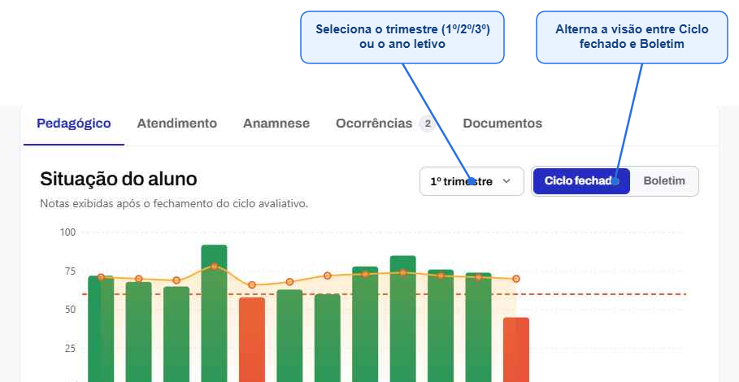
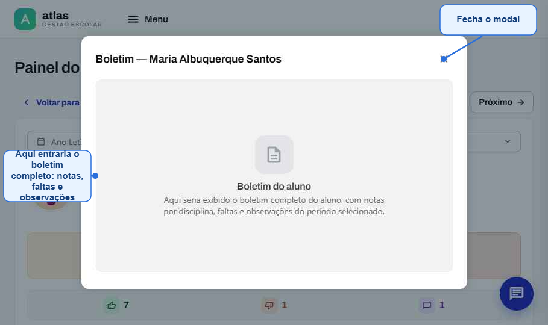
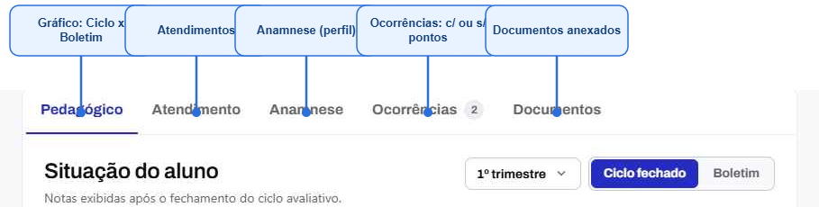
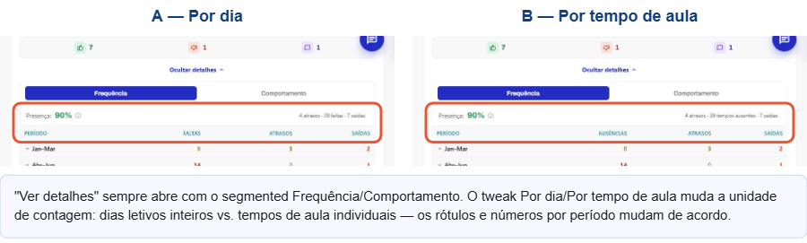
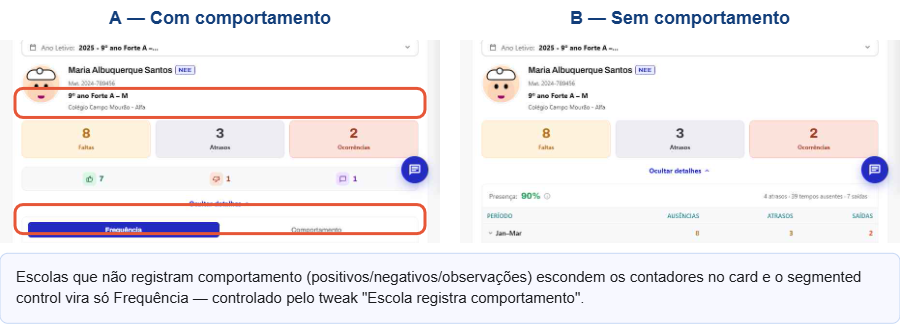
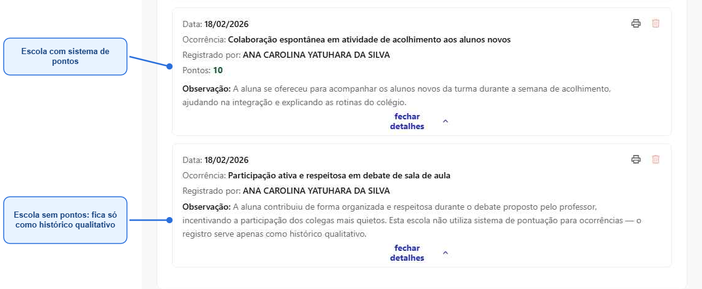
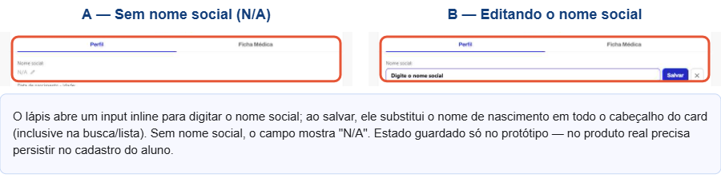
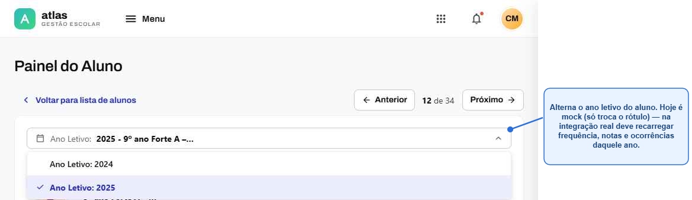
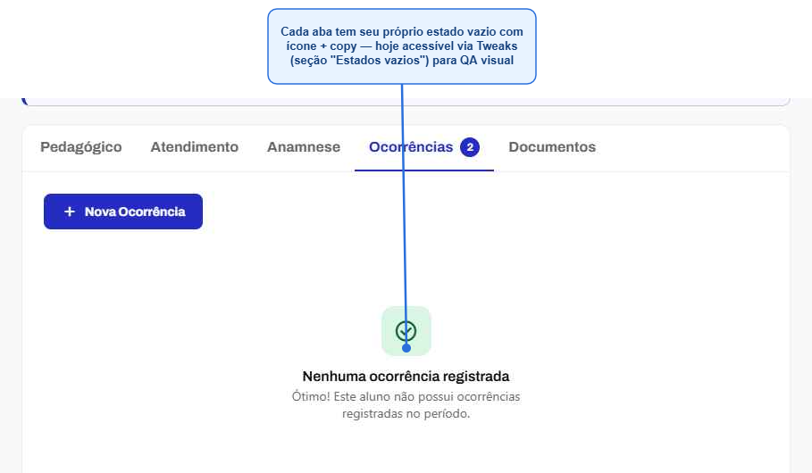
O mesmo caminho de navegação — Lista de Alunos → Painel do Aluno → abas — se comporta de forma bem diferente dependendo dos dados do aluno e das permissões do usuário. Use esta referência para garantir que toda tela nova pense nos dois caminhos, não só no caso ideal.
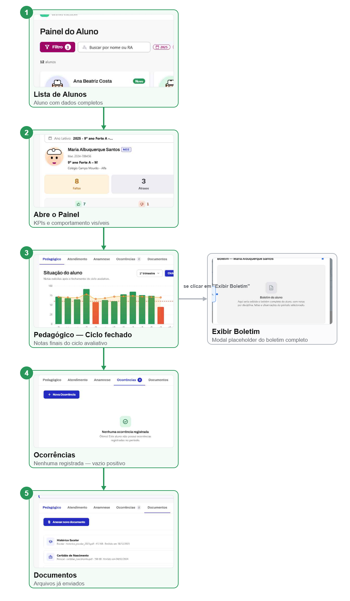
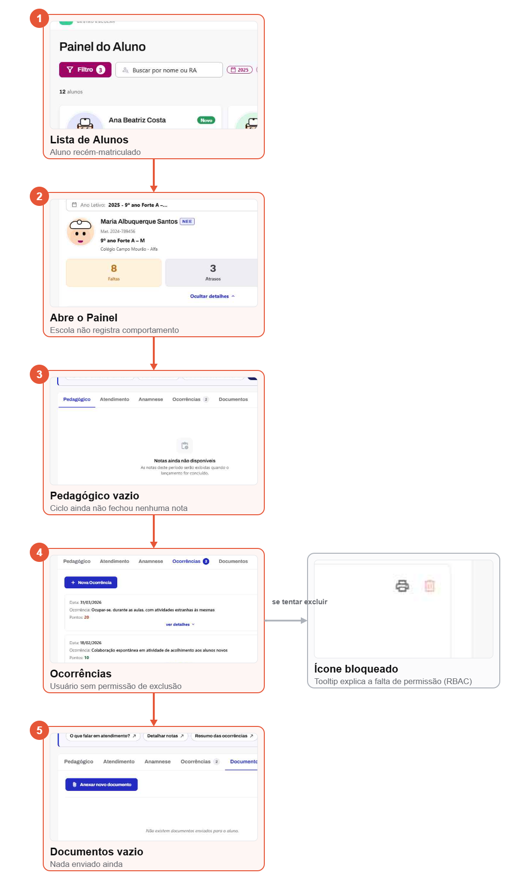
Todo fluxo novo do produto deveria ser desenhado pensando nas duas versões acima antes de ir para desenvolvimento — o estado vazio/triste não é um "extra", é parte do mesmo fluxo.